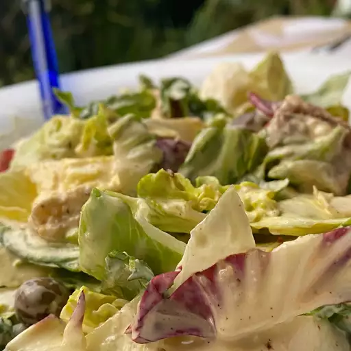

Salad

Description
The legendary food known as salad is simply the most luxurious thing man has created. With the nice, smooth
texture, the food gives a magnificent crunch as you bite into it...... (WARNING: I dunno)
Ingredients
- 2 cloves garlic, chopped, or to taste
- 1 cup mayonnaise
- ⅓ cup grated Parmesan cheese
- ¼ cup half-and-half
- 2 tablespoons fresh lemon juice
- 1 tablespoon Dijon mustard
- 2 teaspoons Worcestershire sauce
Steps
- Combine anchovy fillets with garlic in a food processor and pulse several times to form a paste. Process
mayonnaise, Parmesan cheese, half-and-half, lemon juice, Dijon mustard, and Worcestershire sauce with
anchovy mixture until dressing is creamy. Refrigerate for 1 hour or more before serving.